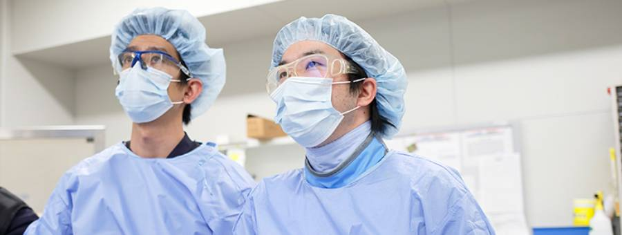

学会認定専門医
Academic conference facility certification

プロフェッショナルを有する小倉記念病院。
- 認定医
- 各学会により定められた基準以上の臨床の知識と経験を有し、審査に合格した医師のことです。専門分野の治療に対して一定以上の実績が求められます。有効期限で書き換えもあるので、常に最新の医学知識を吸収しています。
- 専門医
- 各学会が定める講座の単位を取得し、筆記試験・口頭試問・実技審査に合格した知識や技量が認められた医師のことです。高い基準の臨床業績・研究業績、専門分野への経験年数を裏付けます。
- 指導医
- 各学会が定める所定の審査に合格し、認定医や専門医を育成、指導するために十分な能力を有することを認定された医師のことです。専門医資格を修得後、所定の臨床業績、研究業績があることに加え、指導実績があること、これらすべての要件を満たす医師が認定される資格です。
各学会における認定医・専門医・指導医
※複数の資格を所有している医師がいるため重複している場合があります。（2020.4.1現在）| 日本内科学会 | 認定医 | 68 |
| 専門医 | 30 | |
| 指導医 | 12 | |
| 日本循環器学会 | 専門医 | 27 |
| 日本不整脈心電学会 | 専門医 | 5 |
| 日本心血管インターベンション治療学会 | 認定医 | 26 |
| 専門医 | 10 | |
| 日本経カテーテル心臓弁治療学会 | 経カテーテル大動脈弁植え込み術認定術者 | 2 |
| TAVR（SAPIENシリーズ）実施医 | 5 | |
| TAVR（SAPIENシリーズ）指導医 | 2 | |
| TAVR（Core Valueシリーズ）実施医 | 3 | |
| TAVR（Core Valueシリーズ）指導医 | 2 | |
| 日本心エコー図学会 | SHD心エコー図認証医 | 4 |
| ヨーロッパ心不全学会 | 専門医 | 3 |
| 3学会構成心臓血管外科専門医認定機構 | 認定医 | 1 |
| 心臓血管外科専門医 | 9 | |
| 心臓血管外科修練指導医 | 3 | |
| 日本胸部外科学会 | 認定医 | 3 |
| 指導医 | 1 | |
| アメリカ心臓病学会 | 専門医 | 1 |
| ヨーロッパ心臓病学会 成人経胸壁 心エコー図 | 専門医 | 1 |
| ヨーロッパ心臓病学会 成人経食道 心エコー図 | 専門医 | 1 |
| 日本ステントグラフト実施基準管理委員会 | 腹部大動脈瘤ステントグラフト指導医 | 4 |
| 胸部大動脈瘤ステントグラフト指導医 | 2 | |
| 日本脳神経外科学会 | 専門医 | 5 |
| 指導医 | 1 | |
| 日本脳神経血管内治療学会 | 専門医 | 4 |
| 指導医 | 2 | |
| 日本脳卒中の外科学会 | 認定医 | 1 |
| 指導医 | 1 | |
| 日本脳卒中学会 | 専門医 | 5 |
| 指導医 | 2 | |
| 日本血管外科学会 | 血管内治療認定医 | 2 |
| 指導医 | 1 | |
| 日本心臓血管麻酔学会 | 専門医 | 6 |
| 日本外科学会 | 認定医 | 6 |
| 専門医 | 24 | |
| 指導医 | 7 | |
| 日本内視鏡外科学会 | 認定医 | 3 |
| 日本呼吸器外科学会 | 専門医 | 2 |
| 日本呼吸器学会 | 専門医 | 4 |
| 日本呼吸器内視鏡学会 | 気管支鏡専門医 | 1 |
| 日本がん治療認定医機構 | 認定医 | 8 |
| 指導責任者 | 2 | |
| 日本乳がん学会 | 専門医 | 1 |
| 指導医 | 1 | |
| 日本乳がん検診精度管理中央機構 | 検診マンモグラフィ読影認定医 | 1 |
| 日本肝臓学会 | 専門医 | 2 |
| 日本肝胆膵外科学会 | 高度技能指導医 | 1 |
| 日本外科感染症学会 | 認定医 | 2 |
| 指導医 | 1 | |
| ICD | 1 | |
| 日本消化器外科学会 | 消化器がん外科治療認定医 | 6 |
| 専門医 | 3 | |
| 指導医 | 3 | |
| 日本消化器内視鏡学会 | 専門医 | 4 |
| 指導医 | 1 | |
| 日本消化器病学会 | 専門医 | 7 |
| 指導医 | 1 | |
| 日本化学療法学会 | 抗菌化学療法認定医 | 1 |
| 抗菌化学療法指導医 | 1 | |
| 日本眼科学会 | 専門医 | 1 |
| 日本救急医学会 | 専門医 | 2 |
| 日本形成外科学会 | 認定医 | 1 |
| 専門医 | 2 | |
| 皮膚腫瘍外科分野指導医・再建マイクロサージャリー分野指導医 | 1 | |
| 日本結核病学会 | 認定医 | 2 |
| 日本血液学会 | 専門医 | 5 |
| 指導医 | 3 | |
| 日本再生医療学会 | 認定医 | 1 |
| 日本産科婦人科学会 | 認定医 | 3 |
| 専門医 | 3 | |
| 指導医 | 2 | 日本耳鼻咽喉科学会 | 専門医 | 1 |
| 頭頚部がん専門医 | 2 | |
| 耳鼻咽喉科専門研修指導医 | 2 | |
| 日本麻酔科学会 | 専門医 | 9 |
| 指導医 | 7 | |
| 日本周術期経食道心エコー | 認定医（JB-POT） | 15 |
| 日本集中治療医学会 | 専門医 | 5 |
| 日本小児麻酔学会 | 専門医 | 1 |
| 日本食道学会 | 認定医 | 1 |
| 日本神経学会 | 専門医 | 2 |
| 指導医 | 1 | |
| 日本神経内視鏡学会 | 認定医 | 1 |
| 日本神経麻酔集中治療学会 | 指導医 | 2 |
| 日本人間ドック学会 | 認定医 | 1 |
| 日本腎臓学会 | 認定医 | 1 |
| 専門医 | 4 | |
| 指導医 | 1 | |
| 日本透析医学会 | 専門医 | 5 |
| 指導医 | 3 | |
| 日本整形外科学会 | 専門医 | 1 |
| 日本精神神経学会 | 専門医 | 1 |
| 指導医 | 1 | |
| 日本蘇生学会 | 指導医 | 1 |
| 日本創傷外科学会 | 専門医 | 1 |
| 日本造血細胞移植学会 | 造血細胞移植認定医 | 2 |
| 日本糖尿病学会 | 専門医 | 1 |
| 指導医 | 1 | |
| 日本頭頸部外科学会 | 専門医 | 2 |
| 日本泌尿器科学会 | 専門医 | 3 |
| 指導医 | 2 | |
| 日本泌尿器内視鏡学会 | 泌尿器腹腔鏡技術認定医 | 1 |
| 日本皮膚科学会 | 専門医 | 1 |
| 日本病理学会 | 専門医 | 1 |
| 日本婦人科腫瘍学会 | 専門医 | 1 |
| 指導医 | 1 | |
| 日本脈管学会 | 専門医 | 3 |
| 日本門脈圧亢進症学会 | 認定医 | 1 |
| 日本輸血細胞治療学会 | 認定医 | 2 |
| 日本臨床細胞学会 | 細胞診専門医 | 2 |
| 指導医 | 1 | |
| 日本臨床腫瘍学会 | がん薬物療法専門医 | 2 |
| 指導医 | 1 | |
| 日本臨床麻酔学会 | 認定医 | 1 |
| 日本老年精神医学会 | 専門医 | 1 |
| 指導医 | 1 | |
| 社会医学系専門医協会 | 専門医 | 1 |
| 指導医 | 1 | |
| 日本インターベンショナルラジオロジー学会 | 専門医 | 1 |
| 指導医 | 1 | |
| 日本エイズ学会 | 認定医 | 1 |
| 日本プライマリケア連合学会 | 認定医 | 2 |
| 指導医 | 1 | |
| 日本医学放射線学会 | 認定医 | 1 |
| 研修指導医 | 1 | |
| 日本医師会 | 認定産業医 | 3 |
| 日本感染症学会 | 認定医 | 1 |
| ICD | 1 | |
| 専門医 | 1 | |
| 指導医 | 1 |
学会等施設認定
Academic Conference, etc. Facility certification公的認定状況
- ●地域医療支援病院
- ●臨床研修指定病院
- ●外国医師臨床修練指定病院
- ●救急告示病院
- ●ＤＰＣ対象病院
学会等
- ●日本循環器学会循環器専門医研修施設
- ●日本心血管インターベンション治療学会研修施設
- ●経カテーテル心臓弁治療学会指導施設
- ●Mitra Clip（経皮的僧帽弁接合不全修復システム）認定施設
- ●IMPELLA補助循環用ポンプカテーテル実施施設
- ●日本消化器病学会専門医制度認定施設
- ●日本消化器内視鏡学会認定専門医指導施設
- ●日本消化器外科学会専門医制度修練施設
- ●日本神経学会専門医制度准教育施設
- ●日本脳神経血管内治療学会専門医研修施設
- ●日本脳卒中学会専門医認定制度研修教育病院
- ●日本脳神経外科学会専門医訓練施設
- ●日本外科学会外科専門医制度修練施設
- ●心臓血管外科専門医認定機構認定基幹施設
- ●腹部大動脈瘤ステントグラフト実施基準による
血管内治療施設
- ●胸部大動脈瘤ステントグラフト実施基準による
血管内治療施設 - ●浅大腿動脈ステントグラフ実施施設
- ●日本整形外科学会認定医研修施設
- ●日本形成外科学会認定医認定施設
- ●日本泌尿器科学会専門医教育施設
- ●日本眼科学会専門医研修施設
- ●食道外科専門医準認定施設
- ●麻酔科認定病院
- ●日本集中治療医学会専門医研修施設
- ●心臓血管麻酔専門医認定施設
- ●日本病理学会研修登録施設
- ●日本臨床細胞学会認定施設
- ●日本透析医学会専門医制度認定施設
- ●左心耳閉鎖システム実施施設
- ●潜因性脳梗塞に対する卵円孔開存閉鎖術実施施設
- ●パワードシースによる経静脈的リード抜去術の施設基準
- ●日本IVR学会専門医修練施設
- ●日本腹膜透析医学会教育研修施設
- ●日本腎臓学会研修施設
- ●日本がん治療認定医機構認定研修施設
- ●日本乳癌学会関連認定施設
- ●日本臨床腫瘍学会認定研修施設
- ●日本精神神経学会精神科専門医制度研修施設
- ●日本不整脈学会・日本心電学会認定
不整脈専門医研修施設 - ●日本感染症学会研修施設
- ●日本肝胆膵外科学会認定施設Ｂ
- ●日本呼吸器外科専門医認定修練施設
- ●経カテーテル的大動脈弁置換術実施施設
- ●下肢静脈瘤に対する血管内レーザー焼灼術の
実施基準による実施施設 - ●日本輸血・細胞治療学会認定医制度指定施設
- ●臨床輸血看護師制度指定施設
- ●日本静脈経腸栄養学会・NST稼働施設
- ●日本胃癌学会認定施設B
- ●オンコプラスティックサージェリー学会
- ●日本心エコー図学会専門医制度研修施設